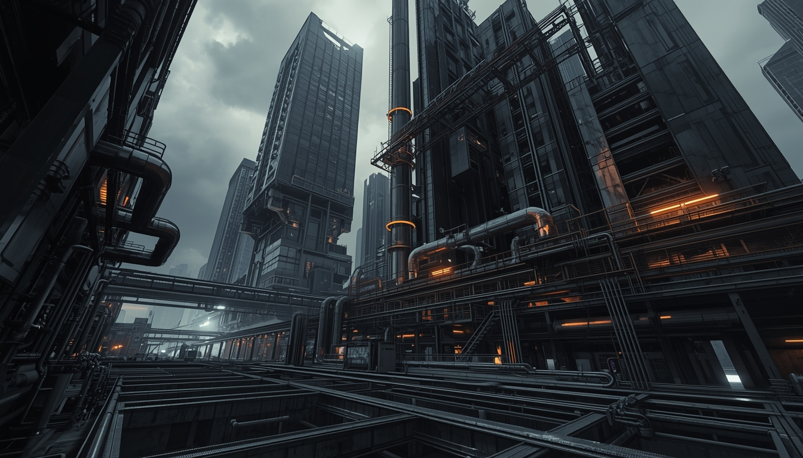
Maxime
SamiezIngénieur Bâtiments Intelligents & Durables
Diplômé Ingénieur de l'Ecole Polytechnique Universitaire de l'Université Côte d'Azur, spécialité Bâtiments. Passionné par l'analyse de données, la construction, la gestion de projet, l'énergie, les matières premières, l'industrie et la technologie.
Formation
Algèbre 1 & 2 · Analyse 1 & 2
Mécanique · Hydrodynamique · Optique géométrique · Construction mécanique
Numérique · Analogique
Programmation impérative (Python) · Environnement informatique · Jeux & Stratégies
Anglais · Expression écrite & orale
Algèbre · Analyse · Probabilités & Statistiques · Signaux
Électromagnétisme · Électronique · Optique ondulatoire · Thermodynamique
POO · Oracle VM · Web
Français · Anglais
Baccalauréat Scientifique spécialité Mathématiques — Lycée Jean-Moulin, Draguignan (2020).
Semestre d'échange international au sein du département Génie Civil de l'Université de Sherbrooke (Québec).
Matériaux du bâtiment · Éco-matériaux
Matériaux composites PRF — visite de l'usine Pultrall Inc. à Thetford Mines
Systèmes hydrauliques du bâtiment · Estimation
Approche par projets concrets · Autonomie · Rigueur analytique
Méthodes de construction et matériaux propres au marché nord-américain
Mécanique des solides · des sols · des structures · générale
Bâtiment intelligent · Maquette · SST
Outils mathématiques · Initiation à la programmation · Initiation à la recherche · Communication · BDI
Thermique · Conditionnement d'air · Gestion énergétique · Système énergétique · Modèle avancé · EnR ROB3 · Bio climatique · Bâtiments durables · Enjeux environnementaux
Béton armé · Structure métallique · Modélisation structures · Eurocodes · Construction bois · Pathologie constructions
Acoustique · Électricité du bâtiment · Éclairagisme
BIM · AutoCAD · Revit · Robot Structural · Pleiades · DIALux evo · Fusion 360 · FormIt
Gestion & management de projet · Gestion immobilière · Droit des sociétés · Droit informatique · Marchés publics & privés · Propriété industrielle · Démarche qualité
Création startup · Stratégie d'entreprise · Négociation commerciale · Hackathon · Maîtrise de l'IA · BATIMAT
Conception complète d'un ouvrage multifonction comprenant un gymnase, des logements collectifs et un laboratoire. J'ai été chargé de la conception du bâtiment, son implantation sur le site et le cheminement des réseaux hydrauliques.
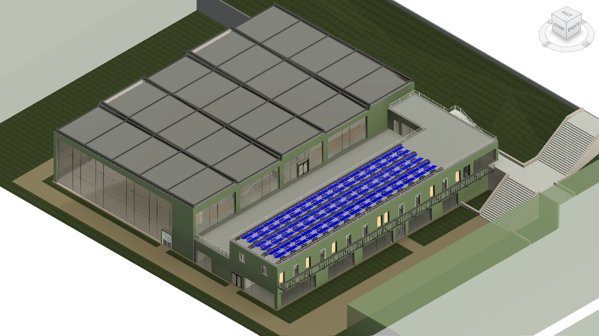
Vue 3D du projet — gymnase
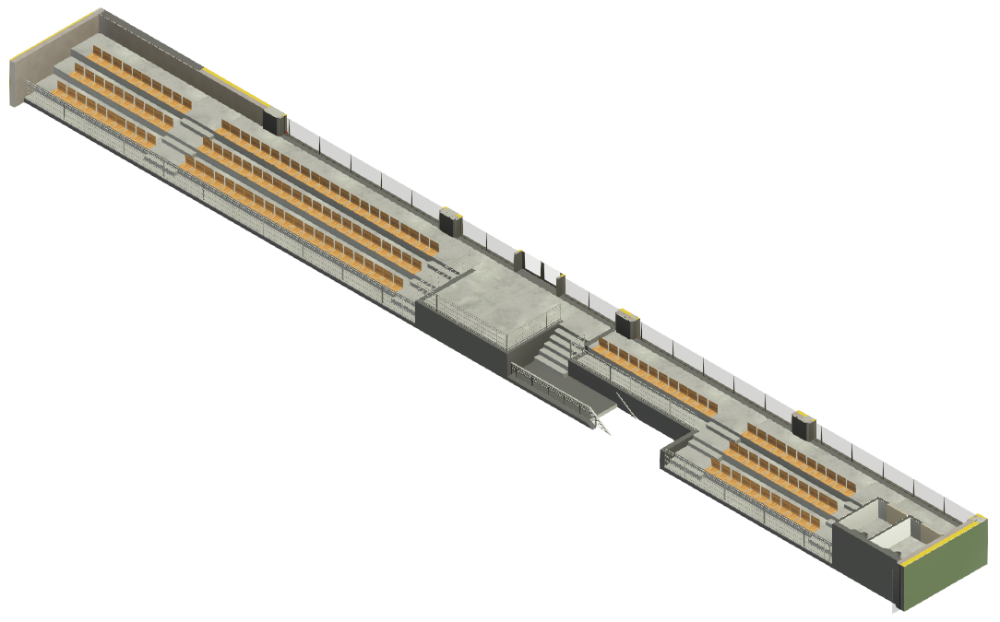
Gradins — vue 3D
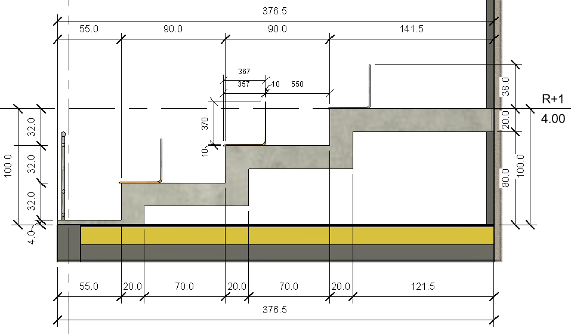
Gradins — vue en coupe
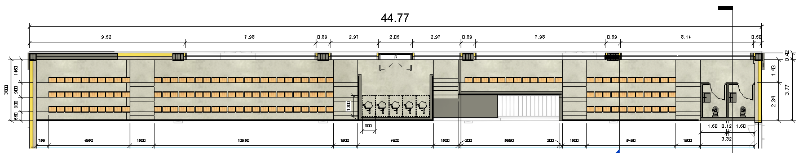
Gradins — vue du dessus
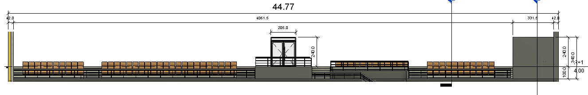
Gradins — vue de devant
Expériences
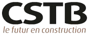
- Modélisation et évaluation de stratégies de rénovation énergétique par simulation numérique sur les bâtiments du site CSTB
- Collecte, traitement et analyse de données réelles (météo, consommation, température) issues de capteurs — modèles détaillés sous Dimosim
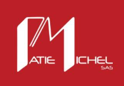
- Réalisation de schémas P&ID, plans d'exécution 3D et familles paramétriques sous AutoCAD et Revit MEP
- Dimensionnement tuyauteries CVC, notes de calcul, devis — création d'outils automatisés (nomenclature, planning VBA)
- Immersion dans un environnement bureau d'études en électronique — découverte du métier d'ingénieur
Le secteur du bâtiment est au cœur de la transition énergétique : il représente une part majeure des consommations d'énergie et des émissions de GES en Europe. La rénovation du parc existant constitue un levier d'action essentiel pour réduire significativement cet impact. C'est dans ce contexte que s'inscrit ce stage de 6 mois au sein du CSTB, leader européen de la recherche sur le bâtiment.
L'objectif initial était d'étudier de manière générique les stratégies de rénovation par simulation numérique. La mission s'est rapidement orientée vers une application concrète : la modélisation et l'évaluation de ces stratégies appliquées aux bâtiments du campus CSTB de Sophia-Antipolis, avec la plateforme Dimosim comme outil central.
- Collecte et traitement de données issues de bases de données météorologiques et de capteurs du site (tableaux électriques, NEMo, ERS CO2, EMS Door) via InfluxDB — plus de 300 000 points de données traités
- Construction de modèles de bâtiment détaillés sous Dimosim — extraction et traitement des géométries IFC sous QGIS
- Calibration rigoureuse des modèles sur les mesures réelles — erreur finale de 1% APE sur la consommation de gaz du bâtiment A/B
- Évaluation de stratégies d'amélioration sur l'enveloppe du bâtiment et les systèmes énergétiques — script Python d'automatisation des simulations
- Développement d'une méthodologie reproductible pour des cas concrets de rénovation
Stage de 5 mois au sein du bureau d'études de Patie Michel, spécialisé en CVC et tuyauterie industrielle, intervenant dans les secteurs pharmaceutique, chimique et agro-alimentaire. Mission polyvalente couvrant l'ensemble du cycle d'un projet : de la conception à la réalisation, en passant par le chiffrage et le suivi de chantier.
-
Réalisation de schémas P&ID sous AutoCAD — apprentissage approfondi du logiciel puis création d'un modèle de référence réutilisable pour tous les projets futurs, avec maîtrise de la symbologie normalisée
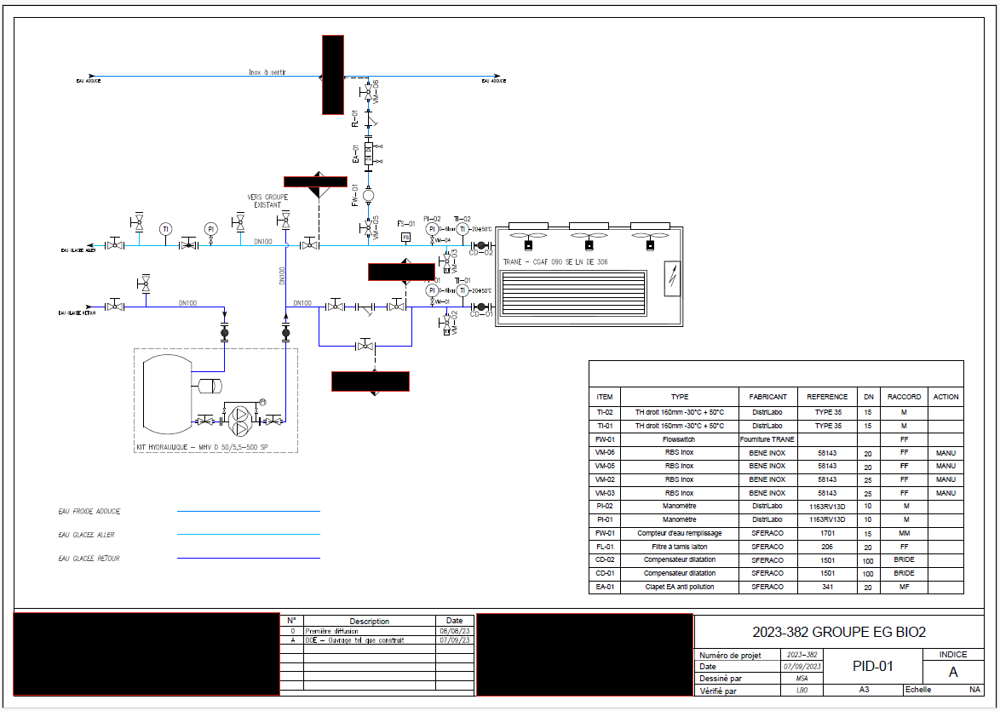
Exemple de schéma P&ID réalisé sous AutoCAD
- Dimensionnement des tuyauteries et équipements CVC — analyse de CCTP, fiches techniques et abaques pour le calcul des débits et pertes de charge, en collaboration avec le tuteur pour validation
-
Plans d'implantation des réseaux et équipements — réalisation de plans de préconception pour définir les cheminements potentiels après visites de site
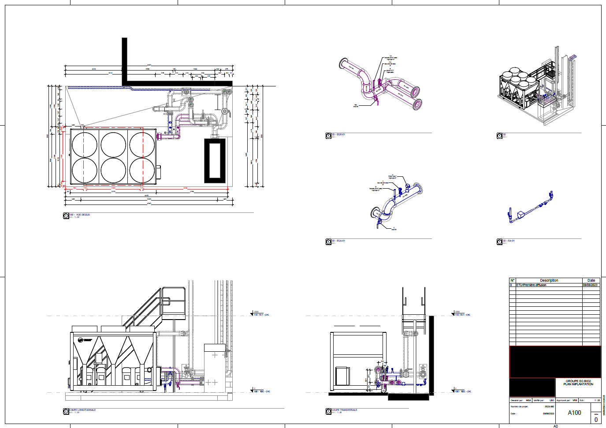
Plan d'implantation — projet 1
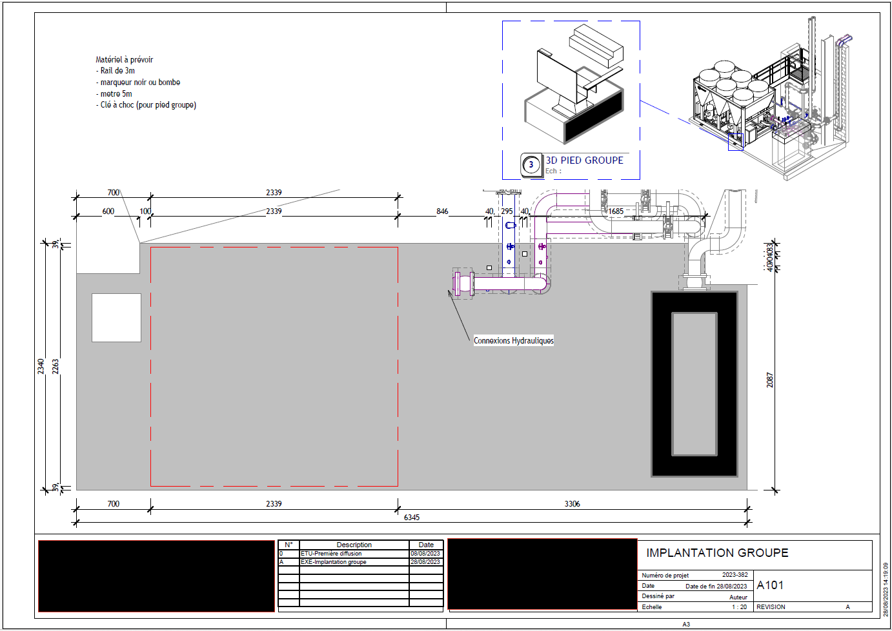
Plan d'implantation — projet 2
-
Plans d'exécution 3D et familles paramétriques sous Revit MEP — création de plans détaillés servant de référence pour la construction, avec développement de familles d'objets paramétrables (dimensions, raccords, informations techniques)
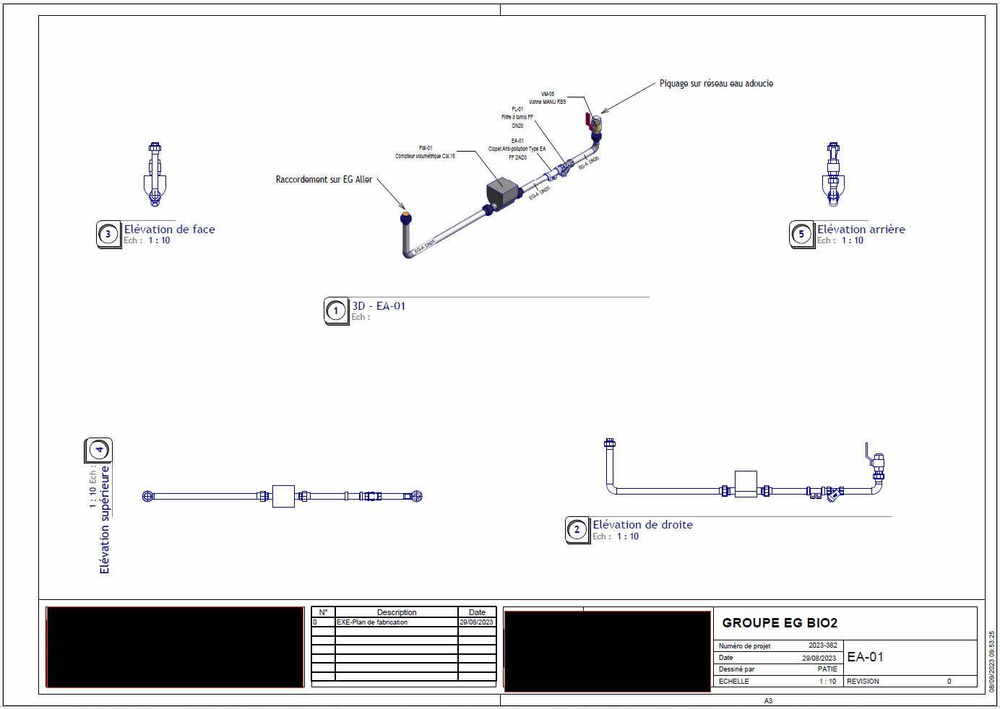
Plan d'exécution 3D — vue 1
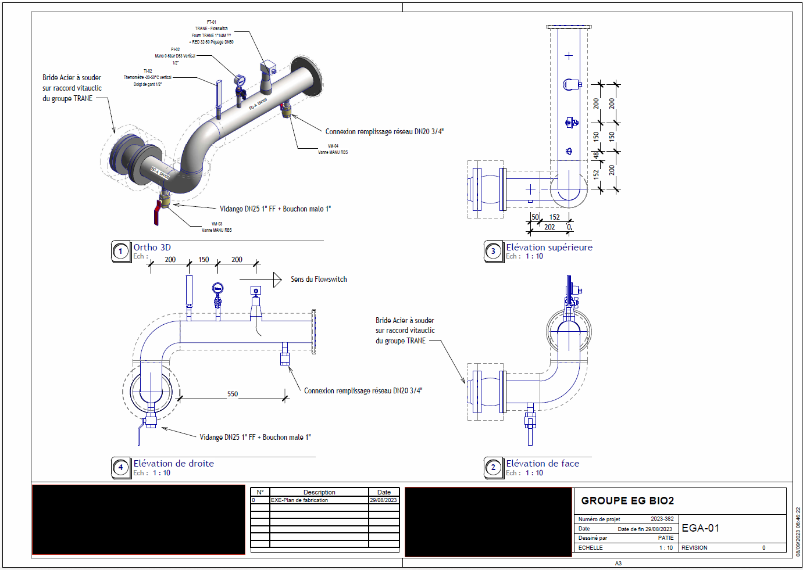
Plan d'exécution 3D — vue 2
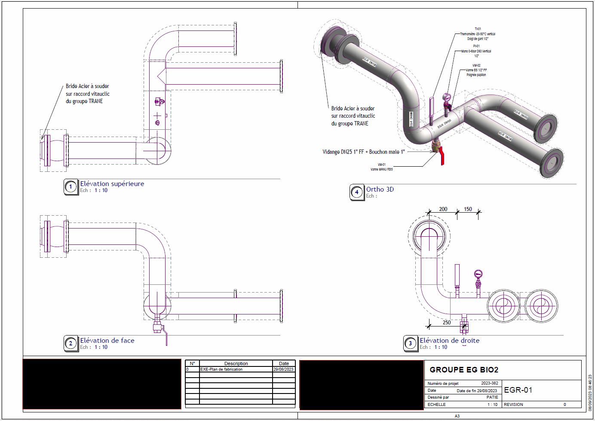
Plan d'exécution 3D — vue 3
- Création d'une nomenclature automatisée inter-logiciels (Excel, AutoCAD, Revit) — gain de temps significatif pour le bureau d'études, le magasinier et les chargés d'affaires
- Développement d'un planning en VBA et modèles de notes de calcul sous Excel pour réduire le temps d'élaboration des livrables
- Encadrement et formation d'un alternant en fin de stage — transmission des compétences acquises sur AutoCAD, Revit MEP et les process internes
Premier contact avec le monde de l'ingénierie au sein d'AXID, bureau d'études spécialisé en électronique et systèmes photovoltaïques à Sophia-Antipolis. Stage de découverte permettant d'appréhender le fonctionnement concret d'une structure technique et les réalités du métier d'ingénieur.
- Électronique analogique : manipulation de cartes électroniques, oscilloscope, alimentation de laboratoire
- Soudure et découpage de composants électroniques
- Gestion des livraisons de panneaux solaires et suivi des commandes (AXUN)
- Participation à la recherche de clients pour la structure
- Découverte de l'environnement bureau d'études : réunions, process internes, relation fournisseurs
De gauche à droite : soudure · livraison panneaux solaires · électronique analogique · cartes électroniques · gestion commandes · découpage
Veille pro
- CERTClaude AI 101Anthropic
- CERTAI FluencyAnthropic